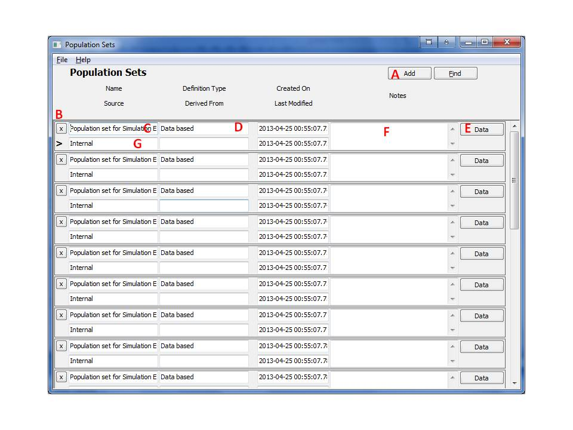
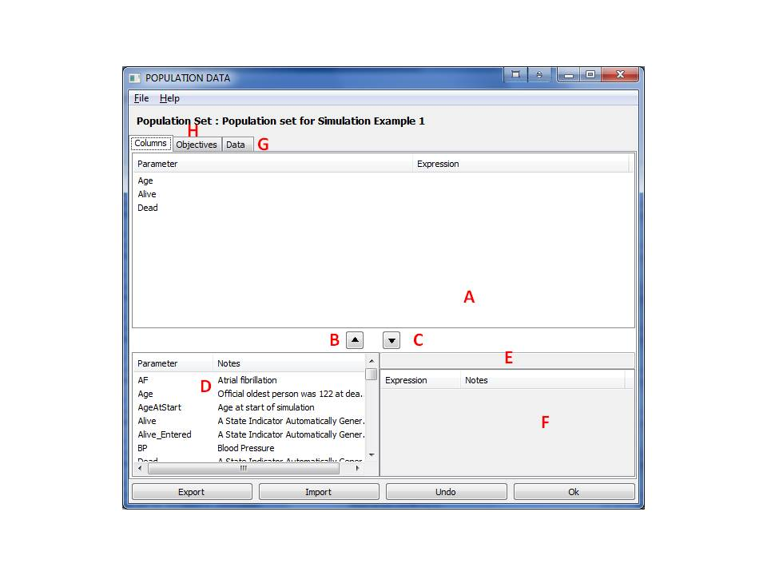

10 Populations
A population (also referred to as population set or data set) represents a pool of subjects and their characteristics. A populations can be either input as data, or by specifying a distribution (to be used for randomly generating population sets).
10.1 Creating Populations
- From the main form, click the 'Populations' button on the left-hand navigation pane. Note that this form can also be accessed by drilling down from the project form.

- This form shows the population groups. Click the 'Add' button (A), and a new row will appear.
- Enter the name for the population set in the box (C). It is also recommended that you enter notes in (F) and a reference to the source of the information in (G) since this improves tractability and improves the modeling work.
- Click the 'Data' button (E) to define the population characteristics and associated data/distributions. The following form will appear.

- To input a population as data: Add a characteristic by selecting a parameter from the table in the lower left (D) and Click the up arrow (C). To remove a row, highlight it in (A), then click the down arrow (B). After all the population characteristics have been added, press the Data Tab (G) and fill in data for the chosen parameters for each individual. The data can also be imported from a file using the Import button - to view or change the imported data, press the data tab (G).
- To specify a population by its distribution: Add a characteristic by selecting a parameter from the table in the lower left (D). Additionally, define the distribution expression in the text box (E), or select a predefined expression parameter from the table in the lower right (F) and it will appear in (E). Click the up arrow (B) to add a row that combines the distribution and the parameter. To remove a row from (A) highlight it, then click the down arrow (C).
10.2 Removing an Entire Population
Identify the population, and click the 'X' (delete) button. This may require deletion of other entities and may be difficult if the deletion candidate was extensively used.
10.3 Generating new population data based on distributions
The system supports the automatic generation of a population set defined by distributions of its characteristics. This feature can be used to automatically generate population sets in the system according to distributions provided in the literature. To perform these tasks, the following steps should be taken:
- Follow the steps defined above in Creating Populations to define a population set defined by distributions that were defined in the previous step.
- Select the desired distribution based population. The population set should read "Distribution based" in the Definition Type field (D).
- Right click the mouse and a pop up menu will appear. Select the entry "Regenerate New Population Data from a Distribution".
- A new input dialog window will appear and will ask for the population size to be generated. Enter the desired number and press OK.
- The system will generate a new population set filled with data that was generated according to the distributions defined in the originally selected distribution population set. The system will place this population set at the end of the list and will focus on it so the user can modify it.
Note that generation of a data based population from distributions is controlled by multiple system option parameters that are listed in Parameters.
Also note that during generation of a population from distributions it is possible to have interdependent parameters that influence each other. For example, Blood Pressure may be a function of Age and Weight can be a function of Age and Height. The system will resolve these interdependencies upon generation as long as there are no circular conflicts such as A depends of B that depends back on A. Also note that parameter bounds are enforced during population generation and may skew a distribution.